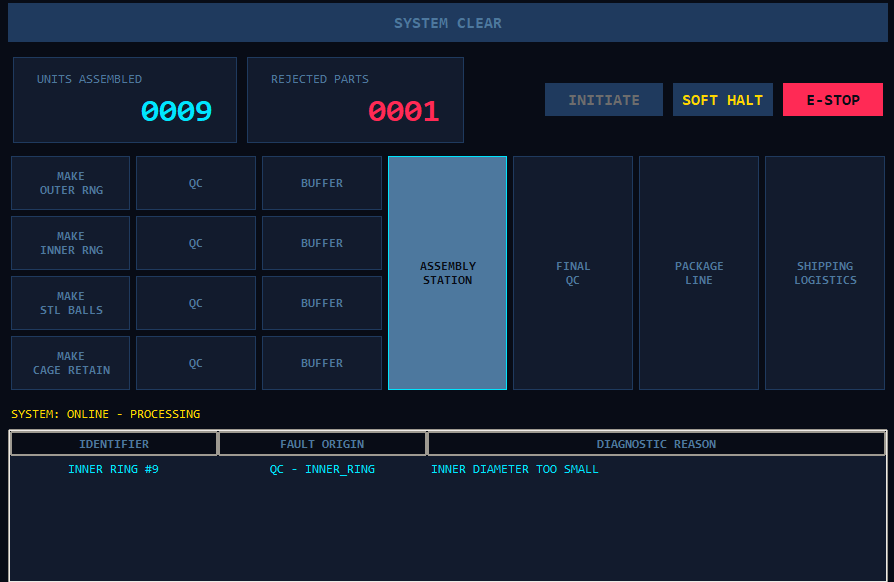
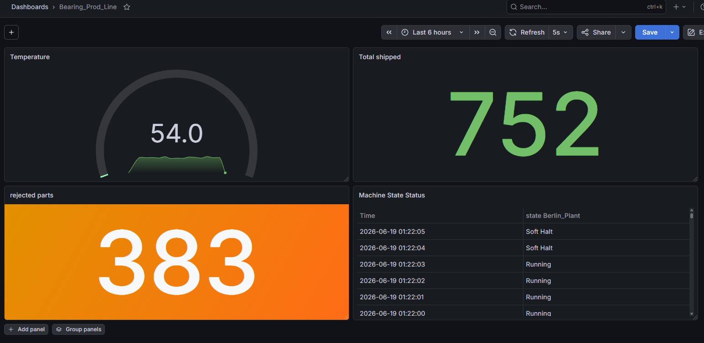

Ball Bearing Production Line
An IIoT simulation modeling a parallelized ball bearing manufacturing process — built with Python, Tkinter, InfluxDB, and Grafana.
Project Highlights
Product
Industrial ball bearings assembled from four parallel-manufactured components: outer ring, inner ring, steel balls, and cage.
HMI
A dark, industrial-style Tkinter interface with live counters, a scalable pipeline grid, and instant E-Stop / Soft Halt controls.
Monitoring
Production and reject metrics streamed every second to InfluxDB and visualized live in a Grafana SCADA-style dashboard.
Quality Control
Each component and the final assembly pass through dedicated QC stages, with defects logged by station and reason.
HMI Dashboard
The operator panel was built with Tkinter following ISA-101 high-performance HMI design principles, using a dark industrial color palette and a fully scalable grid layout. It tracks the background production threads through a thread-safe queue, and exposes two distinct stop behaviors: a Soft Halt that lets the current cycle finish, and an E-Stop that freezes all machinery instantly via msvcrt hardware-level interrupt detection. Live tiles for units assembled and rejected parts sit alongside a real-time pipeline view and a scrolling fault log.

InfluxDB and Grafana Monitoring
A dedicated telemetry thread samples the factory's state once per second — shipped totals, reject totals, simulated machine temperature, and current state (Running, Soft Halt, or E-Stop) — and writes it to InfluxDB as a time-series point. Grafana queries this data with Flux to drive a SCADA-style dashboard, including Stat panels for units shipped and total rejects.

Technologies Used
- Python (Object-Oriented, multithreading)
- Tkinter (HMI / operator panel)
- InfluxDB (time-series data historian)
- Grafana (Flux queries, SCADA-style dashboard)
- Docker & Docker Compose
- Git & GitHub
What I Learned
This project pushed me to design a true parallel manufacturing simulation rather than a sequential one, coordinating multiple threads safely without explicit locks. I learned how to connect live production data to a time-series database and turn it into a real-time monitoring dashboard, while also gaining hands-on experience with Docker-based infrastructure, hardware-level interrupt handling, and the tradeoffs of Python's GIL in a concurrent system.